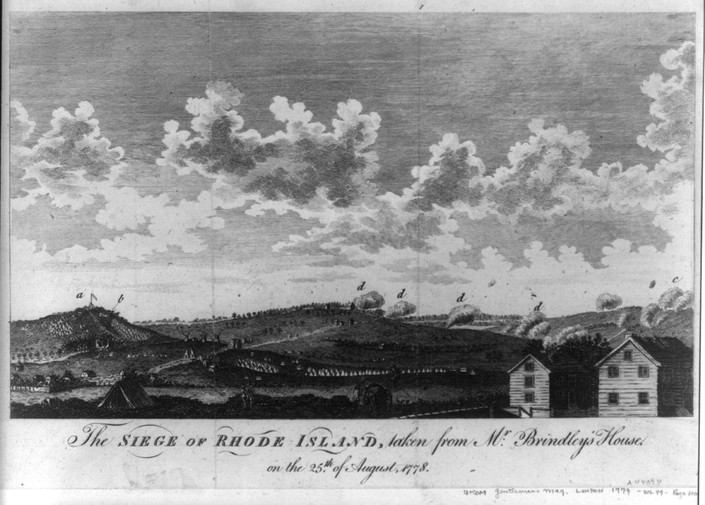

Biography
Several different men named William Tufts served in the Revolution. This page lists each record separately. It does not merge them, because the records do not show which entries belong to the same man.
Service Record
Town: Bedford; Medford; others not given · Dates: See entries
“TUFTES, WILLIAM. Private, Capt. Samuel Ward's co., Col. Solomon Lovell's regt.; service, 5 days, subsequent to March 10, 1776. Roll sworn to in Suffolk Co.”
Massachusetts Soldiers and Sailors of the Revolutionary War, vol. XVI (1907), p. 131 (spelled Tuftes) · page scan

“TUFTS, WILLIAM, Bedford. List of men mustered by Nathaniel Barber, Muster Master for Suffolk Co., dated Boston, April 13, 1777; Capt. Pettengill's co., Col. Wesson's regt.; reported received State bounty.”
Massachusetts Soldiers and Sailors of the Revolutionary War, vol. XVI (1907), p. 139 · page scan

“TUFTS, WILLIAM, Medford. Private, Capt. Stephen Dana's co., Col. McIntosh's (McIntosh's) regt.; arrived at camp March 19 [1778]; discharged April 5 [1778]; service, 18 days, at the Lines at Boston.”
Massachusetts Soldiers and Sailors of the Revolutionary War, vol. XVI (1907), p. 139 · page scan
“TUFTS, WILLIAM. 2d Lieutenant, Capt. Ezekiel Knowlton's co.; list of officers chosen to command three companies drafted from [Brig.] Jonathan Warner's brigade to serve at and about Boston, as returned by said Warner to Maj. Gen. Warren, July 27, 1776.”
Massachusetts Soldiers and Sailors of the Revolutionary War, vol. XVI (1907), p. 139 · page scan
“TUFTS, WILLIAM. Private, Capt. Nathan Sergant's co. of guards; entered service Feb. 3, 1779; discharged May 3, 1779; service, 3 mos.; company raised for service under Maj. Gen. Gates at and about Boston.”
Massachusetts Soldiers and Sailors of the Revolutionary War, vol. XVI (1907), p. 139 · page scan
“TUFTS, WILLIAM. Private, Capt. Stephen Frost's co., Col. Cyprian How's regt.; entered service July 31, 1780, 3 days preceding march; discharged Nov. 1, 1780; service 3 mos. 2 days (also given 96 days), at Rhode Island, including travel (60 miles) home; regiment raised for 3 months.”
Massachusetts Soldiers and Sailors of the Revolutionary War, vol. XVI (1907), p. 140 · page scan

“TUFTS, WILLIAM, Jr. Account of money paid by persons to hire men to go to Canada [year not given], examined and allowed by a committee at Medford Oct. 8, 1776.”
Massachusetts Soldiers and Sailors of the Revolutionary War, vol. XVI (1907), p. 140 · page scan
Family Connection
“TUFTS, WILLIAM. Served at lines at Boston, 1776; in Col. Wesson's Regt., 1777. Son of William and Catherine (Tufts); born 1762; killed 1777.”
Helen Tilden Wild, Medford in the Revolution (1903), p. 53 · page scan

“TUFTS, WILLIAM, 4TH. Joined army at Clavarack, 1779, for 3 mos.; signature on original receipt for bounty in archives.”
Helen Tilden Wild, Medford in the Revolution (1903), p. 53 · page scan
Relatives with profiles on this site: William Tufts (d. 1777), son of William and Catherine .
.
Spouse(s)
Several men; see Family Connection. No spouse is attached to a single man here.
From Tufts Kinsmen
Vol. II records the family of Nathan6 and Sarah (Trefrey) Tufts (Vol. I ref. 93-1), “from William5, William4, James3, Jonathan2, Peter1.” Their children were born in Medford, starting with Sarah7, born 9 Apr. 1780. (Tufts Kinsmen, Vol. II, p. 83) Wild (p. 52) names Nathan Jr. of Medford as the son of William and Susanna, married to Sarah Trefrey.
Possible match only: William5 lived in Medford, but Vol. II does not say which, if any, of the MSS William entries is his.
Vol. I
William Tufts Jr. (40-2): born 27 Mar. 1736 in Medford; died 27 Apr. 1782; private in Capt. Nathan Sargent’s Company of Guards, under Stephen Dana, Col. McIntosh’s Regiment (the book cites DAR 92:120). Profile (Tufts Kinsmen, Vol. I, p. 85, family no. 40-2)
(Tufts Kinsmen, Vol. I, p. 85, family no. 40-2)
Lieut. William Tufts (13-6): born 10 June 1713 in Charlestown; died 29 Oct. 1783 in Medford; said to have died in service during the Revolution. Profile (Tufts Kinsmen, Vol. I, p. 43, family no. 13-6)
(Tufts Kinsmen, Vol. I, p. 43, family no. 13-6)
William Tuffs (35-8): born 1750; served in the Revolution; died 1848 in Elkhart, Ind. Profile (Tufts Kinsmen, Vol. I, p. 77, family no. 35-8)
(Tufts Kinsmen, Vol. I, p. 77, family no. 35-8)
Possible matches. The MSS Medford entries for Capt. Stephen Dana’s co., Col. McIntosh’s regt. (1778) and Capt. Nathan Sergant’s co. of guards (1779) fit William Jr. (40-2) closely, but the MSS entries do not give parentage. The MSS “2d Lieutenant, Capt. Ezekiel Knowlton’s co.” (1776) may be Lieut. William (13-6) but gives no town. Wild’s William (b. 1762, killed 1777) is a different man and has no Vol. I entry.
Authoritative IDs / Index Numbers
| Source | ID / status |
|---|---|
| Perseus person index (auth=) | auth=tufts,william. This is a name-level key shared by every William Tufts in Perseus, not a personal ID. Use it with the passages cited on this page. |
| Find a Grave memorial | Note: Pending further work. |
| Brooks, History of Medford (1855) register no. | Checked, no entry confidently matched |
| Mass. Soldiers and Sailors | vol. XVI, p. 131; vol. XVI, p. 139; vol. XVI, p. 140 |
| DAR ancestor no. | Note: Pending further work. |
| FamilySearch ID | Note: Pending further work. |
| Geni profile | Note: Pending further work. |
| WikiTree ID | Note: Pending further work. |
| Town / vital records | Medford VRs not yet checked by volume and page |
Only IDs confirmed against dates and family are given as matches. “Not yet checked” means the source has not been searched; “Checked, not found” means it was searched without a match.
⚑ Unverified
Which MSS entries match Wild's William (b. 1762, killed 1777) or William 4th. Wild's “Col. Wesson's Regt., 1777” resembles the MSS Bedford entry, but MSS gives the town as Bedford, so they are not linked here.
Pictures



Profile: William Tufts (d. 1777)
Wild’s William, son of William and Catherine (Tufts), killed in 1777, now has his own page: William Tufts (d. 1777) .
.
Links and Resources
Every source, record, map, survey, marker and artifact tied to this person, gathered in one place. Page numbers are given where a book is cited.
Maps, Surveys and Artifacts
- Massachusetts Soldiers and Sailors of the Revolutionary War, vol. XVI (1907), p. 131 (spelled Tuftes) · page scan
- Massachusetts Soldiers and Sailors of the Revolutionary War, vol. XVI (1907), p. 139 · page scan
- Massachusetts Soldiers and Sailors of the Revolutionary War, vol. XVI (1907), p. 140 · page scan
- Helen Tilden Wild, Medford in the Revolution (1903), p. 53 · page scan
- — The Siege of Rhode Island, 1778 (print of 1779). A 1779 print of the siege of Newport that preceded the Battle of Rhode Island (Quaker Hill), August 1778. Image: Unknown engraver. Public domain. Sourc
- Source: Wikimedia Commons — The Siege of Rhode Island, 1778 (print of 1779). A 1779 print of the siege of Newport that preceded the Battle of Rhode Island (Quaker Hill), August 1778.Image: Unknown engraver. Public domain.